地政学
フォス・ド・イグアスはブラジル、パラグアイ、アルゼンチンが川で接する三国国境の都市です。橋、税関、警備、観光、発電、商業が日常化し、国境は線ではなく、通勤、買い物、親族、物流を動かす生活圏として働きます。

🇧🇷 ブラジル / パラナ州 / World City Atlas
世界的な滝、国立公園、三国国境、イタイプ水力発電所、越境商業、多文化の移住史が、観光都市の日常と深く結びつくブラジル南部の水辺の街。
都市の骨格
フォス・ド・イグアスは観光地である前に、パラナ川とイグアス川、国立公園、国境橋、発電施設、住宅地、商店街が連続する越境都市です。
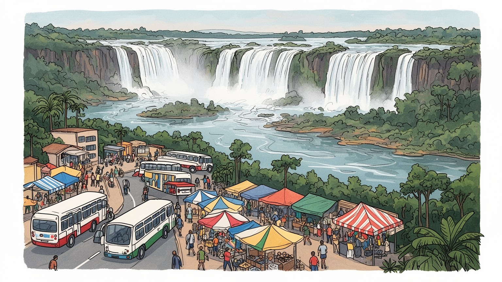
フォス・ド・イグアスはブラジル、パラグアイ、アルゼンチンが川で接する三国国境の都市です。橋、税関、警備、観光、発電、商業が日常化し、国境は線ではなく、通勤、買い物、親族、物流を動かす生活圏として働きます。
仕事は滝の観光、ホテル、飲食、交通、土産物、国境商業、大学、公共サービス、イタイプ水力発電に支えられます。ガイド、運転手、清掃、警備、売店、越境通勤の労働が街を動かし、季節変動も生活を左右します。
ブラジル各地からの移住者に、パラグアイ、アルゼンチン、レバノン系、アジア系の住民が重なり、教会、モスク、寺院、学校、食堂が多文化の日常を作ります。滝の自然崇敬と地域の祝祭も、街の記憶を支えています。
旅行者は滝、鳥の公園、三国国境、ダムを巡りますが、住民には家賃、交通、治安、教育、医療、観光依存、国境管理が切実な課題です。自然の壮大さと生活の小さな不安が同じ道路で交差します。日々の観光都市です。
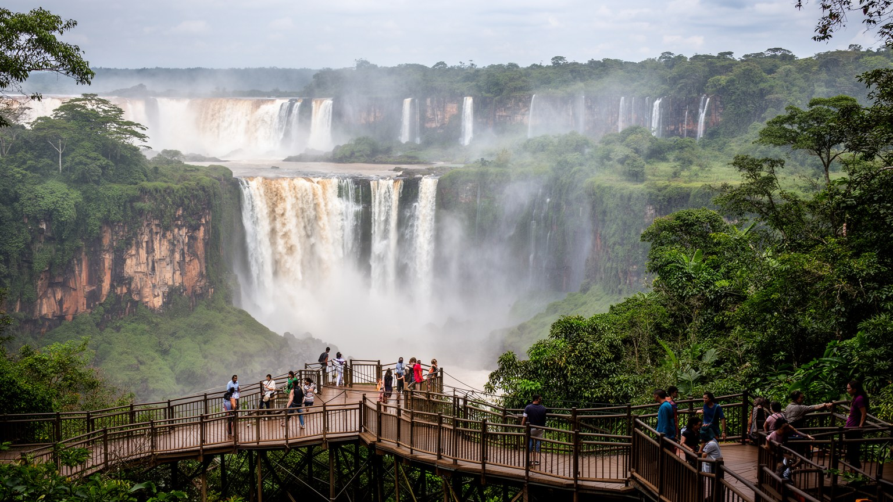
フォス・ド・イグアスの都市像は、イグアス川が玄武岩の台地を刻み、膨大な水量を滝として落とす地形から始まります。滝は観光写真の背景ではなく、国立公園、道路、ホテル、空港、バス路線、土産物店、環境教育、研究、雇用を配置する巨大な都市装置です。雨季と乾季で水の表情は変わり、霧、轟音、虹、湿度は訪問者の記憶を作る一方、歩道、展望台、排水、樹林管理にも影響します。滝の周辺には大西洋岸森林の貴重な残存域があり、都市が自然を売り物にするほど、踏圧、廃棄物、車の流入、生態系への配慮が必要になります。住民にとって滝は誇りであり、働き口であり、週末の遠足であり、外から来る人へ街を説明する言葉です。さらに、滝へ向かう移動は市街地の空間を方向づけ、空港から公園までの道路沿いに宿泊、飲食、両替、レンタカー、旅行会社が並びます。自然景観が都市経済の中心になるほど、天候や水量の変化は商売にも気分にも直結します。川は行政区画を越えて流れるため、上流の農地、森林、発電管理、観光施設の選択が下流の景観と安全に響きます。水を共有する感覚が、街の誇りと責任を結びます。雨音や霧の濃さまで、季節の記憶として都市に残ります。フォス・ド・イグアスを読むには、水の壮大さと、それを安全に見せるための毎日の管理を同時に見る必要があります。
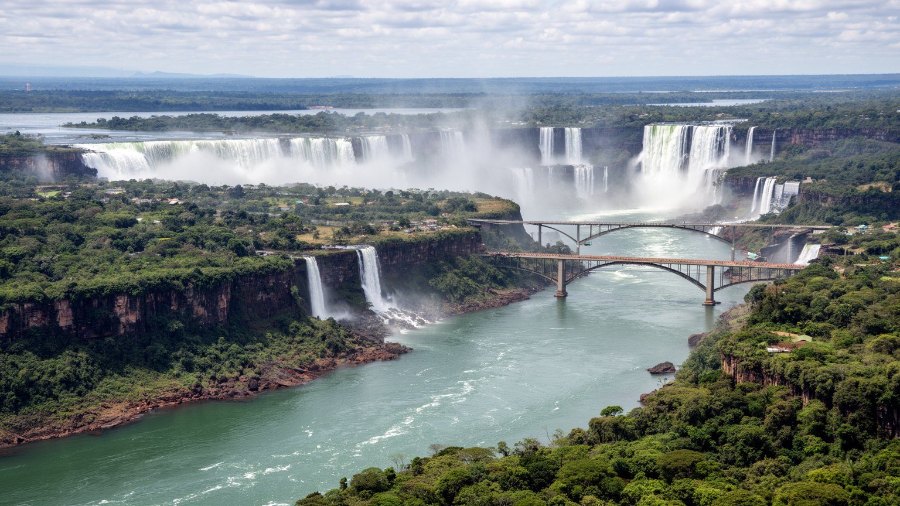
フォス・ド・イグアスは、パラナ川とイグアス川が国境を形づくる三国国境のブラジル側にあります。対岸にはパラグアイのシウダー・デル・エステ、近くにはアルゼンチンのプエルト・イグアスがあり、買い物、通勤、親族訪問、観光、物流、治安協力が日常的に国境を越えます。友情橋や国境検問は、地図上の線を人の待ち時間、通貨の選択、身分証の確認、商売の駆け引きへ変える場所です。国境は機会を広げますが、密輸、非公式労働、税制差、犯罪対策、偏見も伴います。観光客には一日に三つの国を訪れる楽しさが目立ちますが、住民にとって国境は学校、病院、仕事、仕入れ、家族の距離を決める生活条件です。日によっては検問の列が通勤時間を延ばし、通貨の変動が小さな商店の利益を変え、政治的な緊張が人の移動を細らせます。国境の近さは自由だけでなく、身分証、保険、税、警備の手続きを生活の一部にします。異なる国の警察、税関、観光局、交通事業者が関わるため、問題が起きたときの責任の所在は複雑になります。それでも橋を渡る人の流れは、地域全体を一つの生活圏にします。家族の食卓にも、三つの国の物価とニュースが入り込みます。この都市の地政学は外交会議だけでなく、橋の渋滞、両替店、バス停、市場の価格に現れます。国境を越える力が、街の開放性と緊張を同時に作っています。
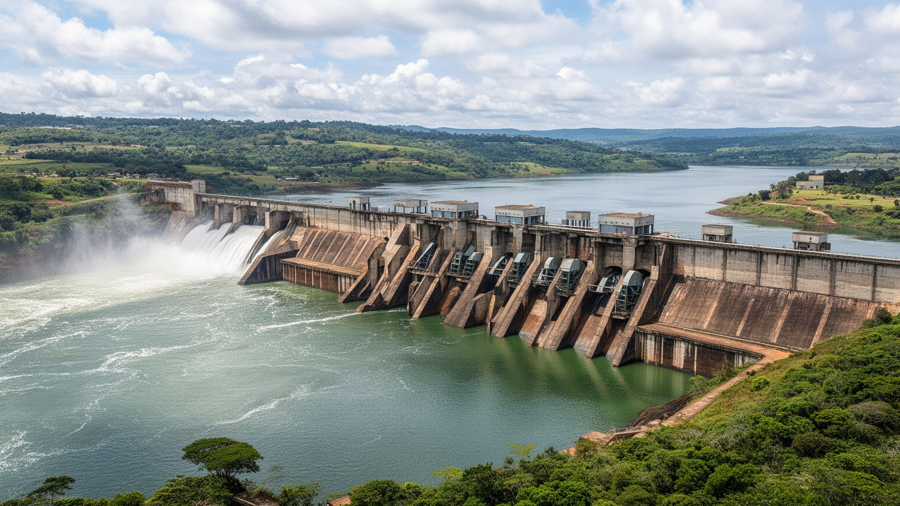
イタイプ水力発電所は、フォス・ド・イグアスを世界的な観光都市であると同時に、エネルギー地政学の都市にもしています。ブラジルとパラグアイがパラナ川を共有して建設した巨大施設は、電力、外交、技術、労働、環境補償を結びつけ、国境の意味を大きく変えました。ダムは地域に雇用、道路、住宅、教育施設、観光見学をもたらしましたが、川の生態系、住民移転、漁業、先住民や農村の記憶にも影響しました。発電量の数字だけを見れば近代化の象徴ですが、都市の側から見ると、技術者、警備、清掃、ガイド、研究者、通勤者が働く日常の場所でもあります。発電所の存在は学校教育や博物館的な見学にも入り、地域の子どもは早くから川と電力の関係を学びます。同時に、巨大な堰が作った湖と送電網は、自然を管理できるという近代の自信と、その管理が生む代償を可視化します。収益や電力配分をめぐる交渉は、ブラジルとパラグアイの関係にも影響し、地域の政治意識を育てます。見学ツアーは巨大技術への驚きと、川を変えることの重さを同時に伝えます。巨大インフラは街に誇りと安定を与える一方、自然の水の流れを国家事業へ組み込む力を持ちます。フォス・ド・イグアスの近代性は、滝の自然景観とダムの人工景観が近距離で並ぶ点にあります。その対照が、都市の魅力と重い責任を同時に示します。
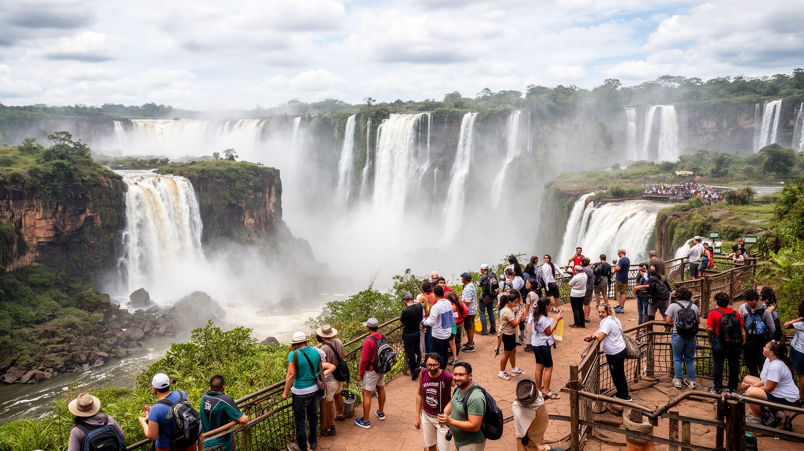
フォス・ド・イグアスの観光は、滝を眺める短い感動だけで成立しているわけではありません。空港からの送迎、ホテルの清掃、朝食の準備、公園のチケット管理、遊歩道の安全確認、ガイドの多言語説明、ボートツアーの装備、レストランの仕込み、土産物店の在庫、国境を越える日帰り客への案内が積み重なって、訪問者の滞在は滑らかになります。観光は地域に仕事を生みますが、季節変動、低賃金、長時間勤務、週末労働、チップ依存、交通費の負担も伴います。自然を売る都市ほど、笑顔で迎える人の生活が見えにくくなります。滝の迫力は誰にとっても同じでも、その周辺で働く人には勤務表、制服、雨具、通勤バス、家族の世話が続きます。外国語を使う仕事が増える一方、学ぶ機会に届かない人は単純労働へ押し込まれやすく、観光の利益は均等に分配されません。混雑する休日には、公園の安全と住民の移動が同じ道路で競合します。国境を越える日程を組む旅行会社は、検問の混雑や相手国の祝日も読み込む必要があります。小さな遅れが、運転手、ガイド、厨房、清掃の時間を後ろへ押し出します。観光都市の成熟は、訪問者数ではなく、働く人が安定して暮らせる条件によっても測られます。フォス・ド・イグアスの経済を読むとき、滝の前に立つ観光客と、その体験を支える労働者を同じ景色の中で考える必要があります。
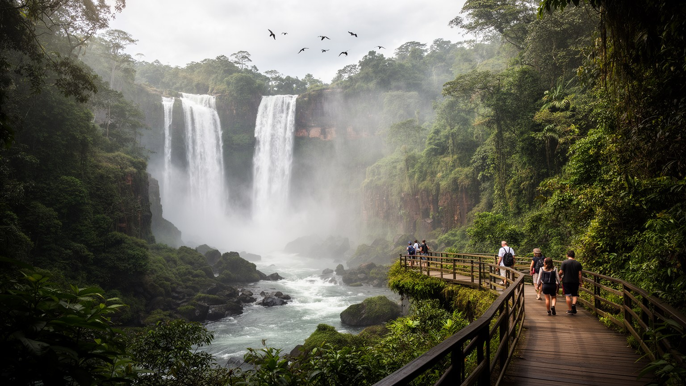
イグアス国立公園は、フォス・ド・イグアスの観光資源であるだけでなく、森林、水、動物、研究、教育を守る制度的な空間です。大西洋岸森林はかつて広大に広がっていましたが、農地化と都市化で大きく失われました。そのため、滝の周辺に残る森は、景色を美しくする飾りではなく、生物多様性と水循環を保つ重要な避難場所です。観光客の動線を整えることは、野生動物との距離、廃棄物、騒音、道路での衝突、違法な餌やりを管理することでもあります。公園が守られるほど街は観光で利益を得ますが、保全の負担や入場料、土地利用規制への不満も生まれます。森はブラジル側だけで完結せず、アルゼンチン側の保護区や周辺農地ともつながるため、越境的な環境協力が欠かせません。都市の成長が進むほど、道路や住宅の拡大が動物の移動路を断たないかも問われます。学校の環境教育、研究者の調査、公園職員の巡回は、観光収入の裏で自然を次世代へ渡す仕事です。保全を地域の誇りとして共有できなければ、森は観光商品の背景へ縮んでしまいます。自然保護は都市の外側の問題ではなく、雇用、教育、交通、農地、住宅開発と結びつく政治的な課題です。フォス・ド・イグアスでは、森を残すことが街の経済を守ることにもなります。自然と都市を分けずに考える姿勢が、この地域の未来を左右します。
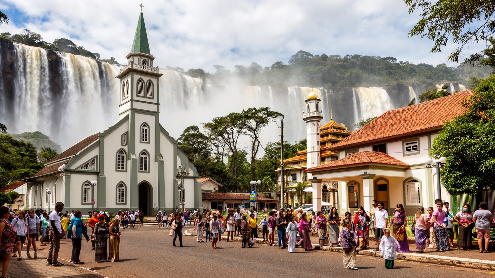
フォス・ド・イグアスの多文化性は、観光パンフレットの飾りではなく、国境都市としての生活の実感です。ブラジル各地から来た人びとに、パラグアイ、アルゼンチン、レバノン系、パレスチナ系、アジア系の住民が重なり、ポルトガル語、スペイン語、アラビア語、商売の言葉が街路で交わります。カトリック教会、福音派教会、モスク、仏教寺院、家庭の祭壇、地域の祝祭は、移住者が自分の記憶を保ちながら都市に根を下ろす場所です。食堂、学校、商店、結婚式、葬儀、宗教行事は、国籍の違いを日常の関係へ変えます。一方で、国境地帯への治安イメージや移民への偏見が、住民の暮らしを狭めることもあります。宗教施設は祈りの場であると同時に、言語相談、寄付、結婚、葬送、若者の教育、商人同士の信頼を支える拠点にもなります。食の規則や祝祭の日程を尊重することは、観光の演出ではなく、住民として暮らす権利に関わります。街の多文化性は、異国風の建物を眺めるだけでは理解できません。子どもが学校で複数の言葉を聞き、商店で家族の移住史が語られ、葬儀や祭りで地域の助け合いが働くところに厚みがあります。多文化都市を名乗るなら、料理や建築を楽しむだけでなく、言語支援、教育、医療、宗教上の習慣を尊重する制度が必要です。フォス・ド・イグアスの祈りの場は、越境商業の街に生活の深さを与えています。
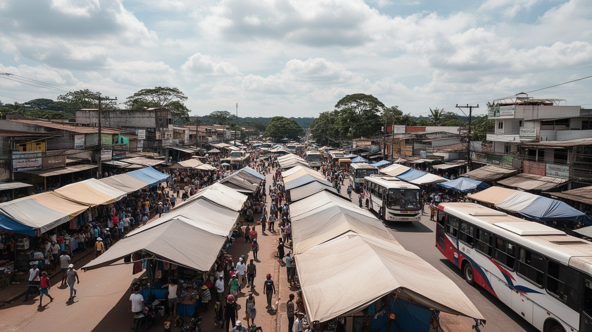
フォス・ド・イグアスの商業は、対岸のシウダー・デル・エステとの関係なしには理解できません。電気製品、衣料品、日用品、香水、食品、部品を求める買い物客が橋を渡り、仕入れ、再販売、配送、両替、交通、荷運びの仕事が生まれます。税率や価格差は越境商業の魅力であり、同時に密輸、模倣品、検査、賄賂、取り締まりの緊張を生みます。ブラジル側の住民にとって、国境商業は安い買い物の場所であるだけでなく、雇用、通勤、家計、家族経営の選択肢です。小規模な商人や運び屋は、正式な物流と非公式な生計の境界に立つことがあります。観光客が滝と買い物を組み合わせるほど、交通渋滞や治安対策も都市の課題になります。商業の現場では、値引き交渉、保証、返品、言語の切り替え、現金とカードの使い分けが毎日の技術になります。国境で働く人は、法律の変更や検査の強化をすぐに収入の変化として受け止めます。市場の活気は魅力ですが、長時間の立ち仕事、荷物運び、非公式な仲介、治安への不安もあります。越境商業を都市の活力として見るなら、その不安定な労働を支える制度も必要です。橋の上で動く商品は、国家の制度差を日々の商売へ変換します。フォス・ド・イグアスの経済は、自然の魅力と国境の価格差が重なってできているため、政策変更や通貨変動の影響を強く受けます。
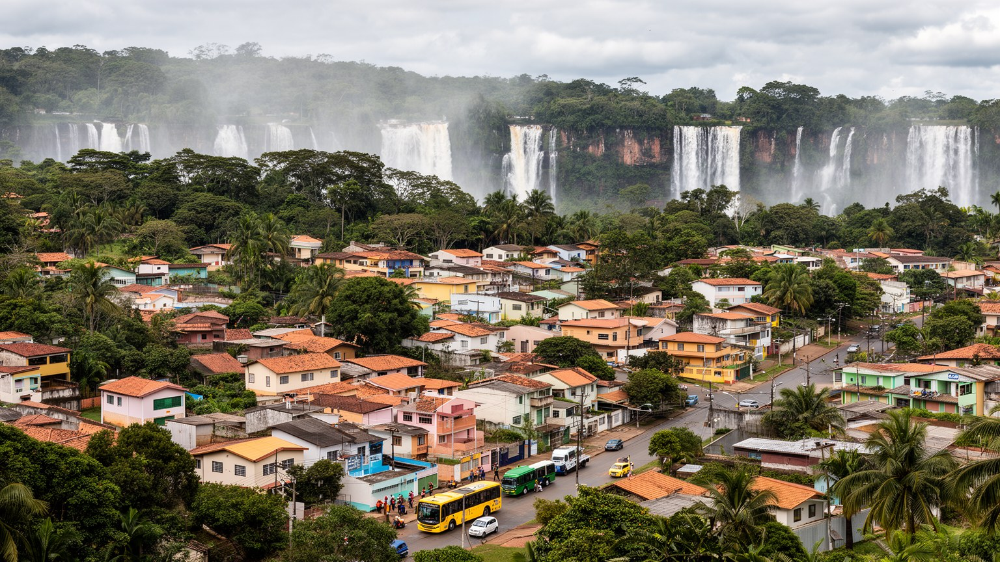
フォス・ド・イグアスの生活は、滝の近くに住む特別な日常というより、住宅地、学校、バス、スーパー、診療所、教会、広場、家族経営の店が支える普通の都市生活です。観光地区や国境へ向かう道路は外からの人で混みますが、住民の関心は家賃、通勤、治安、教育、医療、仕事の安定、暑さと雨への備えにあります。観光業で働く人は週末や祝日に休みにくく、越境商業に関わる人は為替や検問の混雑に影響されます。市内の公共交通は、空港、滝、公園、大学、住宅地、国境を結ぶ必要があり、観光客の動線と住民の移動が重なります。大学や公共機関は地域に若者と専門職を呼び込みますが、観光や国境商業に頼る家計は景気の波を強く受けます。中心部から離れた住宅地では、街灯、舗装、保育、医療、バスの本数が生活の安心を左右します。三国国境の都市では、親族や友人が国をまたいで暮らすことも多く、祝い事や看病の移動にも手続きと交通費が関わります。家庭の会話には複数の国のニュースや物価が入り込みます。世界的な名所を抱える都市でも、生活の質は観光写真では分かりません。夜に帰れるバスがあるか、子どもが安全に通学できるか、医療へ届くか、雨の日に道路が使えるかが、住民にとっての都市の評価になります。フォス・ド・イグアスを読むには、滝を見る時間と同じくらい、住宅地の静かな時間を想像する必要があります。
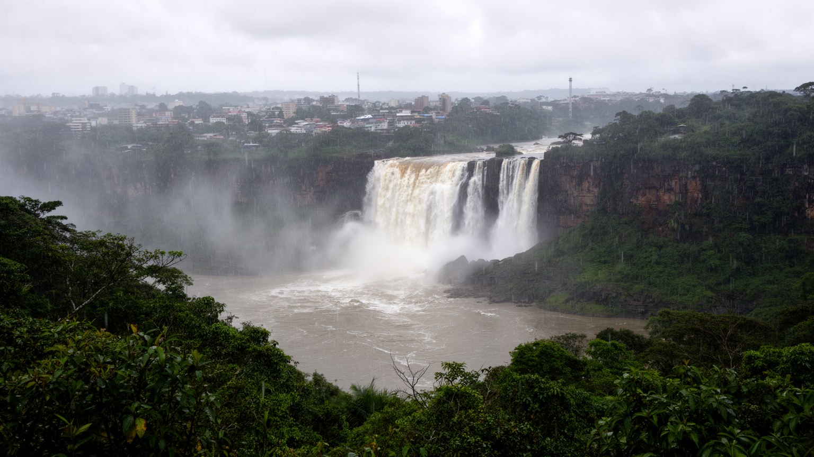
フォス・ド・イグアスの魅力は水にありますが、その水は気候リスクとしても街に戻ってきます。亜熱帯湿潤の気候は緑を育て、滝の水量を支えますが、強い雨、河川増水、土砂、道路冠水、湿度、暑さは日常の移動や観光運営に影響します。滝の水量が多い日は迫力が増す一方、展望台や遊歩道の安全管理は厳しくなります。水力発電は川の力を利用しますが、流量管理、堆砂、生態系、下流への影響を無視できません。気候変動が進めば、豪雨の頻度、極端な暑さ、森林火災、観光の季節性も変わる可能性があります。暑い日には屋外で働くガイド、運転手、清掃員、売店の人が強く影響を受け、雨の日には観光客の予定だけでなく住民の通勤や学校も乱れます。水辺の都市では、環境政策がそのまま労働安全と生活政策になります。川沿いの安全表示、急な天候変化への案内、多言語の警報、日陰と飲み水の確保は、観光サービスであると同時に公共衛生です。気候への備えは、目立たない運営の積み重ねとして街を守ります。水の都市であることは、豊かな景観を持つことだけでなく、予報、排水、避難、森林保全、インフラ点検を続ける責任を持つことです。住民と観光客の安全を守る仕組みがあって初めて、滝の壮大さは安心して体験できます。フォス・ド・イグアスの未来は、水を眺める都市から、水と賢く暮らす都市へ進めるかにかかっています。
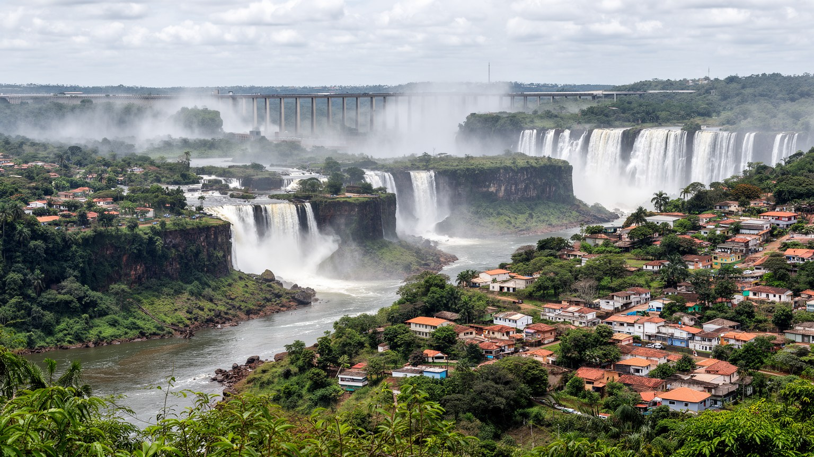
フォス・ド・イグアスは、世界的な滝の入口として記憶されやすい都市です。しかし、滝だけを見て帰ると、この街の本当の厚みは見えません。国立公園の森、三国国境の橋、シウダー・デル・エステとの商業、プエルト・イグアスへの観光、イタイプ水力発電所、移住者の宗教施設、住宅地の通勤、ホテルで働く人の生活が一つの都市圏を作っています。自然は都市の外側にあるのではなく、雇用、教育、交通、保全、外交を動かす中心です。国境は遠い政治の言葉ではなく、買い物、言語、家族、警備、価格、通勤に現れる生活の条件です。発電所は技術の象徴であると同時に、川を国家事業へ組み込んだ歴史を語ります。さらに、多文化の宗教施設や食堂は、国境商業の速さに生活の記憶を与えます。観光都市としての明るさの背後には、公共交通、住宅、教育、治安、環境管理をめぐる地味な調整があります。滝を見る旅の数時間と、そこで働き暮らす人の長い時間を重ねると、都市の姿は大きく変わります。水の迫力、橋の列、祈りの場、住宅地の静けさを一枚の地図で見ることが大切です。フォス・ド・イグアスを読むことは、壮大な景観の前で感動するだけでなく、その感動を支える労働、制度、自然保護、多文化の関係をたどることです。水、国境、移住、観光が重なるこの都市は、周辺に見えて実は南米を読む重要な入口になっています。